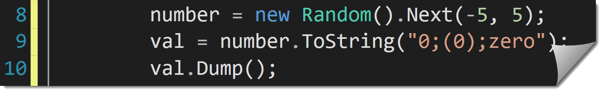
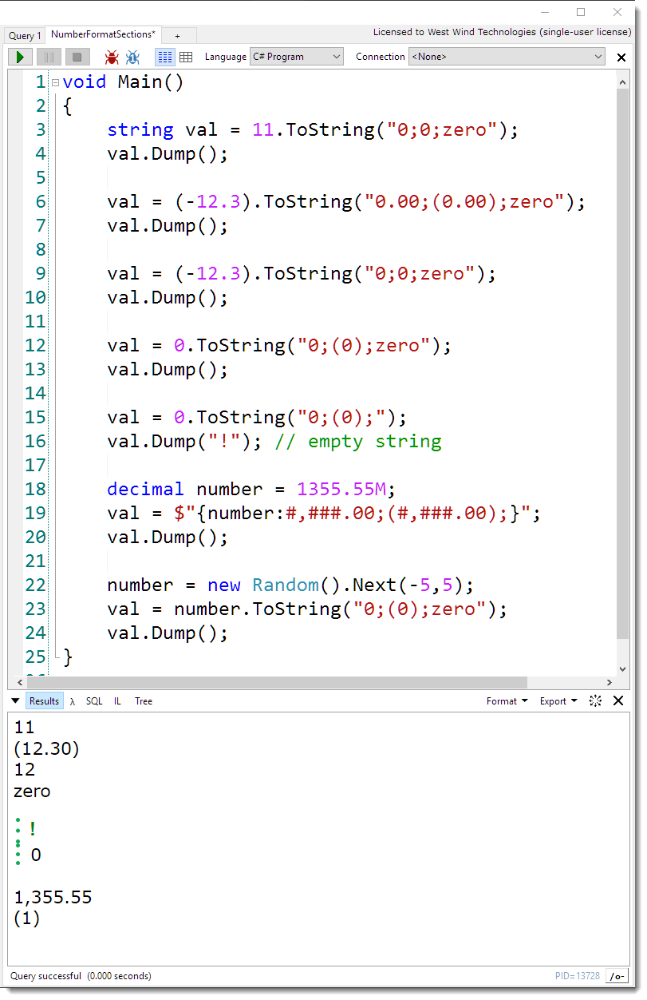

I'm not sure how I've missed this feature in all those years of working in C#: String.Format() supports Number Formatting Sections that allow you to show separate values for positive, negative and zero values.
Take a look:

You can find the official (and very limited) documentation on this feature on MSDN:
Sections are meant to separate:
by using a single format string. The ; character acts as a separator for those three values. But be aware that the format strings you use for the sections are very different than normal format strings - you can't use things like n0 or c2 but you have to be explicit about the number format. Instead you use # or 0 to specify number in the format string and , or . to specify thousands separator and decimal point respectively.
In other words, sections are a special kind of format string using its own custom format for each section.
So:
(12.3).ToString("0.00;(0.00);zero") // 12.30
(-12.3).ToString("0.00;(0.00);zero") // 12.302.3.ToString("0.00;(0.00);zero") // (12.30)
0.ToString("0.00;(0.00);zero") // 12.302.3.ToString("0.00;(0.00);zero") // zero
produces the expected 2 decimal places of the number whereas using just 0 produces the integer values:
(12.30).ToString("0;(0);zero") // 12
(-12).ToString("0;(0);zero") // 12.302.3.ToString("0.00;(0.00);zero") // (12)
0.ToString("0;(0);zero") // 12.302.3.ToString("0.00;(0.00);zero") // zero
You can use 0 or # for numbers to the left of the decimal point and 0 for numbers on the right of it. So this is the same as the last entries:
(12.30).ToString("#;(#);zero") // 12
(-12).ToString("#;(#);zero") // 12.302.3.ToString("0.00;(0.00);zero") // (12)
0.ToString("#;(#);zero") // 12.302.3.ToString("0.00;(0.00);zero") // zero
You also need to be explicit about thousands separator, although you can use just #,###.00 to specify that 1000s should be separated - even for larger numbers:
(112345.30).ToString("#,###.00;(0);zero") // 112,345.30
(-112345.30).ToString("#,###.00;(0);zero") // (112,345.30)
0.ToString("#,###.00;(0);zero") // zero
Note that you can specify that the zero value is empty by not specifying it:
val = 0.ToString("#;(#);"); // string.Empty
You can also use this functionality in C# 6.0's new String Interpolation template strings:
decimal number = 1355.55M;
val = $"{number:#,###.00;(#,###.00);}";
val.Dump();
So, this obviously isn't a game changer of a feature, but it's kinda cool in terms of being able to concisely format numbers especially in scenarios where the number formatting is inlined - like in templates are things like Razor where a function is a lot nicer to read than an immediate if expression.
I'm filing it under - obscure C# things I didn't know...